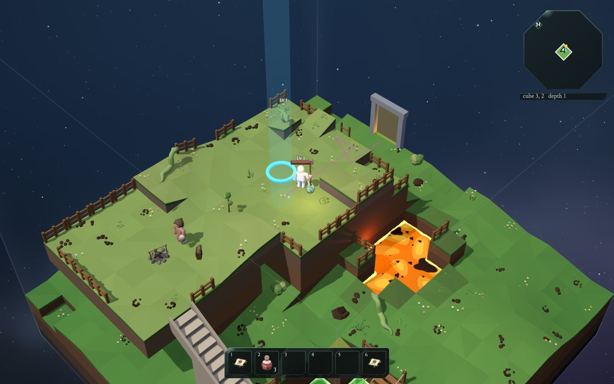
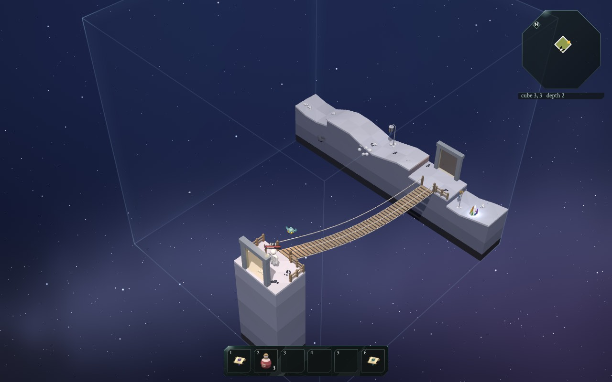

Inventing a whole world
Eine ganze Welt erfinden
Nobody drew the cubes of The Glass Bird. The game invents them while you play. This is called procedural generation: instead of drawing a level, you write the rules for making levels.
Niemand hat die Würfel im Glasvogel gezeichnet. Das Spiel erfindet sie, während du spielst. Das nennt man prozedurale Erzeugung: Statt ein Level zu zeichnen, schreibst du die Regeln, nach denen Level entstehen.
The game does it like a team of four workers:
Das Spiel macht es wie ein Team aus vier Arbeitern:
- The planner draws a path of rooms for each depth: where you come in, where the well is, where the guardians wait.
- Der Planer zeichnet für jede Tiefe einen Weg aus Räumen: wo du hereinkommst, wo der Brunnen ist, wo die Wächter warten.
- The puzzle solver decides what kind of land each cube is: meadow, highland, river, lake... Neighbours must fit together like puzzle pieces.
- Der Puzzle-Löser entscheidet, welche Art Land jeder Würfel ist: Wiese, Hochland, Fluss, See... Nachbarn müssen zusammenpassen wie Puzzleteile.
- The builder makes one cube: hills, rivers, upper floors, stairs, bridges, ladders, fences.
- Der Baumeister baut einen Würfel: Hügel, Flüsse, obere Stockwerke, Treppen, Brücken, Leitern, Zäune.
- The inspector checks that you can really walk from every entrance to the exit. If not: throw it away and build again!
- Der Prüfer kontrolliert, dass du wirklich von jedem Eingang zum Ausgang laufen kannst. Wenn nicht: wegwerfen und neu bauen!

The planner: a path of rooms
Der Planer: ein Weg aus Räumen
Every depth has a route of 9 to 24 rooms: long routes near the top, shorter ones the deeper you go. It starts right under the well of the depth above, and ends at the next well down.
Jede Tiefe hat eine Route aus 9 bis 24 Räumen: lange Routen oben, kürzere, je tiefer du kommst. Sie fängt direkt unter dem Brunnen der Tiefe darüber an und endet am nächsten Brunnen nach unten.
Before the well there is always a strong Temp Boss (gold), and on the way one or two Guardians (pink) block gates. Beat them to open the way. The very first well, on the road out of town, is guarded by a real boss: Gusto; the next ones by Totnar and Squarlo. The Temp Bosses keep the other wells until they get real bosses too.
Vor dem Brunnen steht immer ein starker Temp-Boss (gold), und unterwegs versperren ein oder zwei Wächter (pink) die Tore. Besiege sie, um den Weg zu öffnen. Den allerersten Brunnen, auf dem Weg aus der Stadt, bewacht ein echter Boss: Gusto; die nächsten Totnar und Squarlo. Die Temp-Bosse halten die anderen Brunnen, bis auch sie echte Bosse bekommen.
At the very top, the town and the merchant camp beside it have gates of their own: the town's opens once you find the glassmaker's glass on the plaza, the camp's once you pull his old sword out of the ground.
Ganz oben haben die Stadt und das Händlerlager daneben eigene Tore: Das der Stadt geht auf, sobald du das Glas des Glasmachers auf dem Platz findest, das des Lagers, sobald du sein altes Schwert aus dem Boden ziehst.
Some rooms get a side room with a treasure chest.
Look closely at unusually wide waterfalls: sometimes a dry ledge behind the falling water hides a door. It leads to a peaceful hideout with glowing crystals, mushrooms or plants and a treasure chest. The same door takes you back; opening its chest again gives no extra reward.
Schau bei ungewöhnlich breiten Wasserfällen genau hin: Manchmal verbirgt ein trockener Vorsprung hinter dem fallenden Wasser eine Tür. Sie führt in ein friedliches Versteck mit leuchtenden Kristallen, Pilzen oder Pflanzen und einer Schatztruhe. Durch dieselbe Tür geht es zurück; erneutes Öffnen der Truhe gibt keine zusätzliche Belohnung.
Manche Räume bekommen einen Nebenraum mit einer Schatztruhe.
And in one room on the route waits a horde: a big pack of monsters that attack together (red dot).
Und in einem Raum auf der Route wartet eine Horde: ein großes Rudel Monster, die zusammen angreifen (roter Punkt).
Move the depth slider: deeper down, the ring gets smaller and the route shorter, until the core at depth 20, where the route walks all 9 of its rooms and ends at the last boss, Qualmos.
Beweg den Tiefen-Regler: Je tiefer, desto kleiner wird der Ring und desto kürzer die Route, bis zum Kern in Tiefe 20, wo die Route durch alle 9 seiner Räume geht und bei Qualmos endet, dem letzten Boss.
How the planner finds a path: try, back up, try again
Wie der Planer einen Weg findet: probieren, zurückgehen, nochmal probieren
The planner has a ring of possible cubes around the middle of the world. It wants a path of, say, 18 rooms that ends on the inner edge of the ring.
Der Planer hat einen Ring aus möglichen Würfeln rund um die Mitte der Welt. Er will einen Weg aus, sagen wir, 18 Räumen, der am inneren Rand des Rings endet.
- Start at the room under the last well.
- Fang im Raum unter dem letzten Brunnen an.
- Step to a neighbour that is not used yet. (Which one first? The dice decide.)
- Geh zu einem Nachbarn, der noch nicht benutzt ist. (Welcher zuerst? Das entscheiden die Würfel.)
- Stuck, but not long enough yet? Step back and try a different neighbour.
- Steckengeblieben, aber noch nicht lang genug? Geh einen Schritt zurück und probier einen anderen Nachbarn.
- Long enough and at the right spot? Done!
- Lang genug und an der richtigen Stelle? Fertig!
This is called backtracking. It is how you solve a maze with a pencil: go until you hit a dead end, then go back to the last fork.
Das heißt Backtracking (Zurückverfolgen). So löst du ein Labyrinth mit dem Bleistift: Geh, bis du in einer Sackgasse landest, dann zurück zur letzten Abzweigung.
Then the extras
Dann die Extras
- Guardians: the room with the well always gets the Temp Boss (on the first three depths: the bosses Gusto, Totnar and Squarlo). One or two rooms along the way get Guardians.
- Wächter: Der Raum mit dem Brunnen bekommt immer den Temp-Boss (in den ersten drei Tiefen: die Bosse Gusto, Totnar und Squarlo). Ein oder zwei Räume unterwegs bekommen Wächter.
- A big place: on many depths the planner lays a whole shape into the path: four rooms round one mountain, or six rooms in a hairpin bend with two bridges (see the heights). When the path gets to the chosen step, it puts down all the shape's rooms at once, any way round. If the shape does not fit, it backs up, like at any other dead end. Guardians never stand in it.
- Ein großer Ort: In vielen Tiefen legt der Planer eine ganze Form in den Weg: vier Räume rund um einen Berg, oder sechs Räume in einer Haarnadelkurve mit zwei Brücken (siehe die Höhen). Wenn der Weg beim gewählten Schritt ankommt, legt er alle Räume der Form auf einmal hin, egal wie herum. Passt die Form nicht, geht er zurück, wie bei jeder anderen Sackgasse. Wächter stehen nie darin.
- Side rooms: some rooms get one extra room next to them, but a depth never gets more rooms than its longest route may have.
- Nebenräume: Manche Räume bekommen einen zusätzlichen Raum daneben, aber eine Tiefe bekommt nie mehr Räume, als ihre längste Route haben darf.
- Bridges: on almost every depth, a straight row of rooms may become a gorge with one long bridge across it, or a bridge out to a lonely island. How often is up to the depth's theme (see the bridges).
- Brücken: In fast jeder Tiefe kann eine gerade Reihe von Räumen zu einer Schlucht mit einer langen Brücke darüber werden, oder zu einer Brücke hinaus zu einer einsamen Insel. Wie oft, bestimmt das Thema der Tiefe (siehe die Brücken).
- No shortcuts: side rooms never connect to other rooms, so you cannot sneak around a guardian.
- Keine Abkürzungen: Nebenräume sind nie mit anderen Räumen verbunden, also kannst du dich nicht an einem Wächter vorbeischleichen.
- Treasure: each depth plans four treasure sites, mostly in side rooms.
- Schätze: Jede Tiefe plant vier Schatzplätze, meistens in Nebenräumen.
- A horde: one room on the route gets a wild pack of monsters, all of one kind. The room before it gets only half its monsters, so you arrive fresh.
- Eine Horde: Ein Raum auf der Route bekommt ein wildes Rudel Monster, alle von einer Art. Der Raum davor bekommt nur die Hälfte seiner Monster, damit du ausgeruht ankommst.
The puzzle solver: pieces with matching edges
Der Puzzle-Löser: Teile mit passenden Kanten
Each cube is like a puzzle piece with four edges. Each edge is one of three kinds:
Jeder Würfel ist wie ein Puzzleteil mit vier Kanten. Jede Kante ist eine von drei Sorten:
- L lowland: the ground is low here
- L Tiefland (lowland): Der Boden ist hier niedrig
- H highland: the ground is high
- H Hochland (highland): Der Boden ist hoch
- W water: a river crosses this edge
- W Wasser: Ein Fluss geht über diese Kante
The rule: touching edges must match. A river that leaves one cube must enter the next one.
Die Regel: Kanten, die sich berühren, müssen passen. Ein Fluss, der einen Würfel verlässt, muss in den nächsten hineinfließen.
The edges decide the kind of land: all L is a meadow, all H a highland, two W a river...
Die Kanten bestimmen die Art Land: alles L ist eine Wiese (meadow), alles H ein Hochland (highland), zweimal W ein Fluss (river)...
Press Play and watch the world fill in.
Drück Abspielen und schau zu, wie sich die Welt füllt.
Wave function collapse
Wave Function Collapse
This puzzle method has a fancy name: wave function collapse (WFC). The name comes from physics, but the idea is simple:
Diese Puzzle-Methode hat einen schicken Namen: Wave Function Collapse (WFC, "Zusammenbruch der Wellenfunktion"). Der Name kommt aus der Physik, aber die Idee ist einfach:
- At first, every cube could still be any piece. (87 pieces, so the demo shows 87 options.)
- Am Anfang könnte jeder Würfel noch jedes Teil sein. (87 Teile, darum zeigt die Demo 87 Optionen.)
- Pick the cube with the fewest options left. Roll weighted dice to choose one of its pieces. Now it is "collapsed".
- Nimm den Würfel mit den wenigsten übrigen Optionen. Wirf gewichtete Würfel, um eins seiner Teile zu wählen. Jetzt ist er "kollabiert".
- Its neighbours now have fewer pieces that fit. Repeat!
- Seine Nachbarn haben jetzt weniger passende Teile. Wiederholen!
Picking the cube with the fewest options first is like Sudoku: you fill in the square where only one or two numbers are possible first.
Den Würfel mit den wenigsten Optionen zuerst zu nehmen, ist wie beim Sudoku: Du füllst zuerst das Feld aus, in das nur ein oder zwei Zahlen passen.
Two clever tricks
Zwei schlaue Tricks
Never stuck: many WFC puzzles can get stuck, with a hole where no piece fits. Here, there is a piece for every combination of edges (3×3×3×3 = 81 combinations). So it always works.
Nie steckenbleiben: Viele WFC-Puzzles können steckenbleiben, mit einem Loch, in das kein Teil passt. Hier gibt es für jede Kombination von Kanten ein Teil (3×3×3×3 = 81 Kombinationen). Also klappt es immer.
Big regions: meadows and highlands have big weights (6 and 5), the mixed pieces tiny ones (slope 0.35, gorge 0.03). So same-kind cubes clump together into big areas, and the mixed pieces appear where two areas meet. The theme of each depth changes the weights: the snowy peaks love highlands.
Große Gebiete: Wiesen und Hochländer haben große Gewichte (6 und 5), die gemischten Teile winzige (Hang 0,35, Schlucht 0,03). Darum klumpen gleiche Würfel zu großen Gebieten zusammen, und die gemischten Teile erscheinen dort, wo zwei Gebiete sich treffen. Das Thema jeder Tiefe ändert die Gewichte: Die Schneegipfel lieben Hochland.
In the game, a whole depth is solved at once, the first time you need any cube of it: all its rooms and their neighbours. So the order you explore in does not matter. The same seed always gives the same world, even if you walk backwards!
Im Spiel wird eine ganze Tiefe auf einmal gelöst, sobald du zum ersten Mal irgendeinen Würfel davon brauchst: alle ihre Räume und deren Nachbarn. Darum ist es egal, in welcher Reihenfolge du erkundest. Derselbe Seed gibt immer dieselbe Welt, auch wenn du rückwärts gehst!
That only works because every depth has an end. An endless world would need a new trick.
Das klappt nur, weil jede Tiefe ein Ende hat. Eine endlose Welt bräuchte einen neuen Trick.
Hills from noise
Hügel aus Rauschen
To make hills, the game uses noise: random numbers that change smoothly. Pick random heights at a few points, and blend gently in between. Add a second layer that is twice as wiggly and half as strong, and a third. Big hills with small bumps on top!
Für Hügel benutzt das Spiel Rauschen (Noise): Zufallszahlen, die sich sanft ändern. Wähle an ein paar Punkten zufällige Höhen und verbinde sie weich. Leg eine zweite Schicht drauf, die doppelt so wellig und halb so stark ist, und eine dritte. Große Hügel mit kleinen Buckeln obendrauf!
The noise is the same everywhere in the world, so the ground at the edge of one cube continues smoothly into the next one.
Das Rauschen ist überall in der Welt dasselbe. Darum geht der Boden am Rand eines Würfels sanft in den nächsten über.
On top of the hills, every cube gets one big shape, its archetype: a crack across the cube, a needle of rock, islands, a crater around a lake... Weighted dice pick it. The shape fades out near the edges, so the edges still match the next cube.
Über die Hügel bekommt jeder Würfel eine große Form, seinen Archetyp: eine Spalte quer durch den Würfel, eine Felsnadel, Inseln, ein Krater um einen See... Gewichtete Würfel wählen ihn aus. Die Form wird zu den Rändern hin schwächer, damit die Ränder trotzdem zum nächsten Würfel passen.
Walls that two cubes share
Wände, die sich zwei Würfel teilen
Two cubes next to each other share a wall, called a face. Cubes are built one at a time, maybe hours apart. How do their edges line up?
Zwei Würfel nebeneinander teilen sich eine Wand, die Seite (Face) heißt. Würfel werden einer nach dem anderen gebaut, vielleicht mit Stunden dazwischen. Wie passen ihre Ränder zusammen?
The trick: the face is decided first, and only once. Whichever of the two cubes is prepared first decides it, and saves it. Then both cubes build their edge to match it:
Der Trick: Die Seite wird zuerst entschieden, und nur einmal. Welcher der beiden Würfel zuerst vorbereitet wird, entscheidet sie und speichert sie. Dann bauen beide Würfel ihren Rand passend dazu:
- the ground height along the edge, 16 numbers from the noise
- die Bodenhöhe entlang des Rands, 16 Zahlen aus dem Rauschen
- where a river crosses it, and how wide it is
- wo ein Fluss darüber geht und wie breit er ist
- where the portal (the gate) stands, and on which floor
- wo das Portal (das Tor) steht und auf welchem Stockwerk
- on a gorge: the valley's shape instead of noise, and a pad where the bridge crosses
- bei einer Schlucht: die Form des Tals statt Rauschen, und ein Absatz, wo die Brücke hinübergeht
Each face even has its own dice (its own seed), so it comes out the same no matter which cube decided it.
Jede Seite hat sogar eigene Würfel (einen eigenen Seed). Darum kommt sie gleich heraus, egal welcher Würfel sie entschieden hat.
Did it work?
Hat es geklappt?
The game's makers checked over 400 pairs of neighbouring cubes: on every single one, the ground height and the water match on every edge cell, corners included.
Die Macher des Spiels haben über 400 Paare benachbarter Würfel geprüft: Bei jedem einzelnen passen Bodenhöhe und Wasser an jeder Randzelle, die Ecken eingeschlossen.
Inside the cube, the builder blends from the four edges towards the middle, and adds its own hills there. The middle can be wild, the edges always match.
Im Inneren des Würfels mischt der Baumeister von den vier Rändern zur Mitte hin und fügt dort seine eigenen Hügel hinzu. Die Mitte darf wild sein, die Ränder passen immer.
Long bridges over gorges
Lange Brücken über Schluchten
On almost every depth (not in the town, not at the core), the planner sometimes picks a straight row of three or four rooms. The rooms in the middle become a gorge: a deep valley with a river, or just empty sky. Only one long bridge leads across.
In fast jeder Tiefe (nicht in der Stadt, nicht im Kern) sucht sich der Planer manchmal eine gerade Reihe aus drei oder vier Räumen aus. Die Räume in der Mitte werden zu einer Schlucht: ein tiefes Tal mit einem Fluss, oder einfach leerer Himmel. Nur eine lange Brücke führt hinüber.
How often is up to the theme of the depth: on the sky islands almost always, in the mountains and the badlands often, in the caves only now and then. Empty sky under the bridge only where there is sky: over the islands, the peaks, and the bottomless abyss.
Wie oft, bestimmt das Thema der Tiefe: auf den Himmelsinseln fast immer, in den Bergen und im Ödland oft, in den Höhlen nur ab und zu. Leerer Himmel unter der Brücke nur dort, wo es Himmel gibt: über den Inseln, den Gipfeln und dem bodenlosen Abgrund.
Every wall the bridge passes through gets a height for it. So a bridge can stay high over the valley, or come all the way down from the top of a cliff to the river bank. Where two gorge rooms meet, the bridge rests on a rock pillar. In the caves the bridges stay lower, under the rock walls.
Jede Wand, durch die die Brücke geht, bekommt eine Höhe für sie. So kann eine Brücke hoch über dem Tal bleiben oder von ganz oben auf einer Klippe bis zum Flussufer hinunterführen. Wo zwei Schluchträume sich treffen, ruht die Brücke auf einer Felssäule. In den Höhlen bleiben die Brücken tiefer, unter den Felswänden.
What a bridge is made of depends on the theme too: logs in the roots, ice in the frozen caves, chains between iron towers in the forge, prayer flags in the highlands, or a natural rock arch across the canyon. Each theme has a list of styles, and each style says where it fits: a log is short, a rock arch needs the ground close below, towers need room above.
Woraus eine Brücke ist, bestimmt auch das Thema: Baumstämme in den Wurzeln, Eis in den Frosthöhlen, Ketten zwischen Eisentürmen in der Schmiede, Gebetsfahnen im Hochland oder ein natürlicher Felsbogen über dem Canyon. Jedes Thema hat eine Liste von Bauarten, und jede Bauart sagt, wo sie passt: Ein Baumstamm ist kurz, ein Felsbogen braucht den Boden dicht darunter, Türme brauchen oben Platz.
Sometimes the bridge leads away from the route, to a lonely island with a treasure. The bridge is the only way there. Like every cube, the gorge and the island only show up once you get there, one cube at a time as you cross.
Manchmal führt die Brücke weg von der Route, zu einer einsamen Insel mit einem Schatz. Die Brücke ist der einzige Weg dorthin, und wie jeder Würfel zeigen sich die Schlucht und die Insel erst, wenn du dort bist: ein Würfel nach dem anderen, während du hinübergehst.
Why not let the builder find it?
Warum sucht der Baumeister sie nicht selbst?
The builder's own bridges are short (up to 7 squares) and almost flat. A gorge bridge is 12 squares long and may climb half the height of the cube. So the builder gets it ready-made, from pad to pad, and the route just walks over it.
Die eigenen Brücken des Baumeisters sind kurz (bis zu 7 Felder) und fast flach. Eine Schluchtbrücke ist 12 Felder lang und kann die halbe Höhe des Würfels hochsteigen. Darum bekommt der Baumeister sie fertig, von Absatz zu Absatz, und die Route geht einfach darüber.
Under the bridge, the ground is kept low so you can walk beneath it. Only where a river bank has to come up close under a low bridge is there no room for your head: the route never goes there, it walks around.
Unter der Brücke bleibt der Boden tief, damit du darunter durchgehen kannst. Nur wo ein Flussufer dicht unter eine tiefe Brücke kommen muss, ist kein Platz für deinen Kopf: Dort geht die Route nie hin, sie geht außen herum.

Cliffs, mountains, needles, lakes and tunnels
Klippen, Berge, Felsnadeln, Seen und Tunnel
Big height differences are planned like the gorges, from the seed, before any cube is built:
Große Höhenunterschiede werden wie die Schluchten geplant, aus dem Seed, bevor ein Würfel gebaut wird:
- A tableland: three rooms in a row on the route. In the first you stand at the foot of a sheer cliff and climb up. The second is a high plateau. From the edge of the third you get back down: you leap off onto something soft (sand, snow, moss, a web), climb down, or wind down a ramp round a great shaft, a hole that goes right through to the depth below. What is down there you only find out by going there, like every room.
- Ein Tafelberg: drei Räume nacheinander auf der Route. Im ersten stehst du am Fuß einer steilen Klippe und kletterst hinauf. Der zweite ist eine hohe Hochebene. Vom Rand des dritten kommst du wieder hinunter: Du springst auf etwas Weiches (Sand, Schnee, Moos, ein Netz), kletterst hinunter, oder gehst auf einer Rampe um einen großen Schacht herum nach unten, ein Loch, das bis in die Tiefe darunter geht. Was dort unten ist, findest du erst heraus, wenn du hingehst, wie bei jedem Raum.
- A pinnacle: a needle of rock with a path winding round it to a treasure on top.
- Eine Felsnadel: eine Säule aus Fels, mit einem Weg, der sich um sie herum zu einem Schatz oben hinaufwindet.
- A spiral: four rooms round one mountain in the corner they share. A railed ramp winds round it, from its foot where you come in to a ridge high up where you go out.
- Eine Spirale: vier Räume rund um einen Berg in der Ecke, die sie sich teilen. Eine Rampe mit Geländer windet sich um ihn herum, von seinem Fuß, wo du hereinkommst, bis zu einem Grat hoch oben, wo du hinausgehst.
- A hairpin: six rooms. A low bridge goes out over a canyon, two rooms climb at the turn, and a high bridge comes back over the same canyon to a summit. From up there you see the bridge you crossed below.
- Eine Haarnadel: sechs Räume. Eine niedrige Brücke führt über eine Schlucht hinaus, zwei Räume steigen in der Kurve an, und eine hohe Brücke kommt über dieselbe Schlucht zurück zu einem Gipfel. Von dort oben siehst du die Brücke, über die du unten gegangen bist.
- A lone peak: an almost empty field with one block of rock in the middle, and a ladder up to a treasure on top. A great lake: water from shore to shore, the way round it on the shore, and sometimes an islet with a treasure and a bridge out to it.
- Ein einsamer Gipfel: ein fast leeres Feld mit einem Felsblock in der Mitte und einer Leiter hinauf zu einem Schatz. Ein großer See: Wasser von Ufer zu Ufer, der Weg führt am Ufer herum, und manchmal gibt es eine kleine Insel mit einem Schatz und einer Brücke hinüber.
- A tunnel: a ridge of rock across a room, with a short passage through it. In the caves and the canyon the ridge goes from wall to wall, so the way leads through.
- Ein Tunnel: ein Felsrücken quer durch einen Raum, mit einem kurzen Durchgang. In den Höhlen und in der Schlucht geht der Rücken von Wand zu Wand, also führt der Weg hindurch.
A depth gets at most one big place (a tableland, a spiral or a hairpin) and at most one special room (a pinnacle, a lone peak or a lake), each by chance. You still discover a big place one room at a time, through portals, like everywhere else. But there are no walls inside it: once you have been in two of its rooms, the face between them opens and it becomes one place.
Eine Tiefe bekommt höchstens einen großen Ort (einen Tafelberg, eine Spirale oder eine Haarnadel) und höchstens einen besonderen Raum (eine Felsnadel, einen einsamen Gipfel oder einen See), jeweils durch Zufall. Auch einen großen Ort entdeckst du Raum für Raum, durch Portale, wie überall sonst. Aber in ihm gibt es keine Wände: Sobald du in zwei seiner Räume warst, geht die Seite zwischen ihnen auf, und er wird ein Ort.
Making the route take the scenic way
Damit die Route den schönen Weg nimmt
The route search always wants the cheapest way. A ladder straight up the needle is much shorter than the ramp round it! So in these rooms, ladders and stairs onto the needle, or down off the cliff, cost extra. Now the ramp and the leap are the cheapest, and the route takes them. The ladders are still there for the way back.
Die Routensuche will immer den billigsten Weg. Eine Leiter gerade die Nadel hinauf ist viel kürzer als die Rampe außen herum! Darum kosten in diesen Räumen Leitern und Treppen auf die Nadel oder die Klippe hinunter extra. Jetzt sind die Rampe und der Sprung am billigsten, und die Route nimmt sie. Die Leitern gibt es trotzdem, für den Rückweg.
The spiral works the same way: anything but walking onto its ramp costs extra, so you really go all the way round. On the lone peak it is the other way round: there only the ladder is cheap.
Bei der Spirale ist es genauso: Alles außer Gehen auf ihre Rampe kostet extra, also gehst du wirklich ganz herum. Beim einsamen Gipfel ist es umgekehrt: Dort ist nur die Leiter billig.
A tunnel's roof is just one more floor, over the floor you walk on. The cutaway cuts it open around you, like the upper floors.
Das Dach eines Tunnels ist einfach noch ein Boden, über dem Boden, auf dem du gehst. Der Schnitt öffnet es um dich herum, wie die oberen Stockwerke.
The builder: try the real cube factory
Der Baumeister: Probier die echte Würfelfabrik
This is the real generator of the game, running right here in your browser.
Das ist der echte Generator des Spiels, er läuft hier in deinem Browser.
Pick a depth and a room on its route, and press Build it! It plans the route, solves the puzzle, decides the faces and builds the cube, usually in a few thousandths of a second.
Wähl eine Tiefe und einen Raum auf ihrer Route und drück Bauen! Er plant die Route, löst das Puzzle, entscheidet die Seiten und baut den Würfel, meistens in ein paar Tausendstelsekunden.
Gold rings: gates to other cubes, and the well down. Cyan: the ring you came up through. Pink dashes: the route the builder planned. Grey: stone stairs. Brown: wooden bridges.
Goldene Ringe: Tore zu anderen Würfeln und der Brunnen nach unten. Türkis: der Ring, durch den du hochgekommen bist. Rosa Striche: die geplante Route. Grau: Steintreppen. Braun: Holzbrücken.
Rooms called "arena" are guardian rooms. Each one is a kind of arena: rolling hills, a gorge, a colosseum, a throne with steps, a ring of standing stones, a crater, a grove or a ruined courtyard. There is always room to fight. Try depth 15 or 17 for caves.
Räume namens "arena" sind Wächterräume. Jeder ist eine Art Arena: sanfte Hügel, eine Schlucht, ein Kolosseum, ein Thron mit Stufen, ein Ring aus stehenden Steinen, ein Krater, ein Hain oder ein zerfallener Hof. Platz zum Kämpfen gibt es immer. Probier Tiefe 15 oder 17 für Höhlen.
The assembly line
Das Fließband
The builder works in fixed steps, one after the other, like a factory line. Each step adds something:
Der Baumeister arbeitet in festen Schritten, einer nach dem anderen, wie ein Fließband in einer Fabrik. Jeder Schritt fügt etwas hinzu:
- How many floors stacked up (1 to 4)
- Wie viele Stockwerke übereinander (1 bis 4)
- Ground heights, blended from the four faces
- Bodenhöhen, gemischt aus den vier Seiten
- The big shape (archetype, or a cliff, a needle, a shaft), and maybe a tunnel
- Die große Form (Archetyp, oder eine Klippe, eine Nadel, ein Schacht), und vielleicht ein Tunnel
- Portals on the faces
- Portale an den Seiten
- Rivers, from crossing to crossing
- Flüsse, von Übergang zu Übergang
- Waterfalls into the cube below
- Wasserfälle in den Würfel darunter
- Space for treasure sites and a horde's camp
- Platz für Schatzplätze und das Lager einer Horde
- Upper floors (slabs)
- Obere Stockwerke (Platten)
- Ramps and supports
- Rampen und Stützen
- Pools and streams, then banks all around every water (no water in the air!); the water level with its shore, so you walk in and out, shallow along its banks and deep where it has water on all four sides, to swim in
- Teiche und Bäche, dann Ufer rund um jedes Wasser (kein Wasser in der Luft!); das Wasser auf gleicher Höhe wie sein Ufer, damit du hinein- und hinausgehst, flach an seinen Ufern und tief, wo es auf allen vier Seiten Wasser hat, zum Schwimmen
- Every possible move: walk, drop, jump, stairs, bridge, ladder (a gorge's long bridge is laid down whole)
- Jede mögliche Bewegung: gehen, fallen, springen, Treppe, Brücke, Leiter (die lange Brücke einer Schlucht wird am Stück hingelegt)
- Routes between the portals, and to the horde and past it; then the spots kept free for the quests, where you can get to and back; then, in the dark forest, little scenes beside the way (an abandoned shed, a stone circle) that never block it
- Routen zwischen den Portalen, und zur Horde und an ihr vorbei; dann die Plätze, die für die Aufträge frei bleiben, dort, wo man hin- und wieder zurückkommt; dann, im Dunklen Wald, kleine Szenen neben dem Weg (ein verlassener Schuppen, ein Steinkreis), die ihn nie versperren
- Ways up onto big cut-off platforms (small ones are just scenery), and escape routes from places you could fall into: a ladder out of any water with no bank low enough to climb out onto
- Wege hinauf auf große abgeschnittene Plattformen (kleine sind nur Kulisse), und Fluchtwege aus Stellen, in die man fallen kann: eine Leiter aus jedem Wasser, das kein Ufer hat, das niedrig genug zum Herausklettern ist
- Place the stairs, bridges and ladders
- Treppen, Brücken und Leitern aufstellen
- Smooth the ground
- Den Boden glätten
- Bridge styles and pillars
- Brückenstile und Pfeiler
- Fences on dangerous edges
- Zäune an gefährlichen Kanten
- The inspection Die Prüfung
Notice step 11 and 12: the builder first lists every move a hero could make, then searches for the cheapest way between the portals. That search is the same kind used for finding the way.
Schau dir Schritt 11 und 12 an: Der Baumeister listet erst jede Bewegung auf, die ein Held machen könnte, und sucht dann den billigsten Weg zwischen den Portalen. Das ist dieselbe Art Suche wie beim Wegfinden.
The inspector: throw it away and try again
Der Prüfer: wegwerfen und nochmal versuchen
After building, an inspector plays the cube in its head. Starting from the exit, it works out everything the hero can really do:
Nach dem Bauen spielt ein Prüfer den Würfel im Kopf durch. Vom Ausgang aus findet er alles heraus, was der Held wirklich tun kann:
- walk on flat ground and slopes, jump up one level, drop down cliffs that have no fence
- auf flachem Boden und Hängen gehen, eine Stufe hochspringen, Klippen ohne Zaun runterfallen
- swim, and climb out of water up to one level
- schwimmen und bis zu eine Stufe aus dem Wasser klettern
- use the stairs, bridges and ladders
- Treppen, Brücken und Leitern benutzen
If any portal cannot reach the exit, a route squeezes under a ceiling that is too low, or there is no way to the horde and on past it, the cube fails. The builder throws it away and tries again with new dice. Up to 200 tries!
Wenn irgendein Portal den Ausgang nicht erreicht, eine Route unter einer zu niedrigen Decke durchquetscht oder kein Weg zur Horde und an ihr vorbei führt, fällt der Würfel durch. Der Baumeister wirft ihn weg und versucht es mit neuen Würfeln. Bis zu 200 Versuche!
Usually the first try works: about four cubes out of five.
Meistens klappt der erste Versuch: bei etwa vier von fünf Würfeln.
A true story
Eine wahre Geschichte
An earlier version planned its routes from the first portal outwards. But you can drop down a cliff and not climb back up. So some routes only worked in the wrong direction!
Eine frühere Version hat ihre Routen vom ersten Portal aus nach außen geplant. Aber man kann eine Klippe runterfallen und nicht wieder hochklettern. Manche Routen funktionierten also nur in die falsche Richtung!
When the makers tested it: none of 12 test worlds could be finished, and in four of them you were trapped in the town.
Als die Macher es getestet haben: Keine von 12 Testwelten war schaffbar, und in vier davon war man in der Stadt gefangen.
After the fix, routes are planned from every portal to the exit, and the inspector checks it. Now 64 of 64 test worlds can be walked from the town all the way to depth 20.
Nach der Reparatur werden Routen von jedem Portal zum Ausgang geplant, und der Prüfer kontrolliert es. Jetzt sind 64 von 64 Testwelten von der Stadt bis Tiefe 20 begehbar.
Lesson: write a check for the thing that must never break.
Lehre: Schreib eine Prüfung für das, was nie kaputtgehen darf.
Try it: rooms with a puzzle
Probier es: Räume mit einem Rätsel
Some cubes are more than a way to the exit. A trial room is built around one goal:
Manche Würfel sind mehr als ein Weg zum Ausgang. Ein Prüfungsraum ist um ein Ziel herum gebaut:
- Events change the room while you are in it: the water rises, the floor crumbles behind you, fog sinks down. Get to the goal in time!
- Ereignisse verändern den Raum, während du drin bist: Das Wasser steigt, der Boden bröckelt hinter dir weg, Nebel sinkt herab. Erreiche das Ziel rechtzeitig!
- Puzzles take no hurry: turn mirrors until the beam hits, light every brazier, push crates onto plates, or slide across the ice.
- Rätsel haben keine Eile: Dreh Spiegel, bis der Strahl trifft, zünde jede Feuerschale an, schieb Kisten auf Platten oder rutsch übers Eis.
This is the Ice slide, made and solved by the game's own code. On ice you can't stop: you slide until a rock or the rim stops you. Can you reach the golden plate in as few slides as the solver?
Das ist die Eisrutsche, gebaut und gelöst vom echten Code des Spiels. Auf Eis kannst du nicht anhalten: Du rutschst, bis dich ein Stein oder der Rand stoppt. Schaffst du es mit so wenigen Rutschern zur goldenen Platte wie der Löser?
Proving a puzzle can be solved
Beweisen, dass ein Rätsel lösbar ist
A puzzle made by dice could be impossible. Or far too easy. Or it could have a trap you can never get out of. So every puzzle is made together with a solver: a program that tries every way. The maker throws dice, the solver checks, and the field is thrown away until one is good. Just like the inspector!
Ein Rätsel aus Würfelwürfen könnte unmöglich sein. Oder viel zu leicht. Oder eine Falle haben, aus der du nie herauskommst. Darum wird jedes Rätsel zusammen mit einem Löser gebaut: einem Programm, das jeden Weg ausprobiert. Der Bauer würfelt, der Löser prüft, und das Feld wird weggeworfen, bis eines gut ist. Genau wie beim Prüfer!
- Ice slide: a breadth-first search over the places where you can stop. Switch on "every stop" in the demo: that's what it found.
- Eisrutsche: eine Breitensuche über die Orte, an denen du anhalten kannst. Schalte in der Demo "jeder Halt" an: Das hat sie gefunden.
- Mirrors: every setting of every mirror is tried, a few thousand. There must also be a wrong setting that looks right.
- Spiegel: Jede Stellung jedes Spiegels wird ausprobiert, ein paar Tausend. Es muss auch eine falsche Stellung geben, die richtig aussieht.
- Crates on plates: backwards! Start with every crate on its plate and pull them away, every way you can. The state furthest away becomes the start.
- Kisten auf Platten: rückwärts! Fang mit jeder Kiste auf ihrer Platte an und zieh sie weg, auf jede mögliche Art. Der Zustand, der am weitesten weg ist, wird der Anfang.
Events: a slow player
Ereignisse: ein langsamer Spieler
For the rising water, the check works out how soon you could reach every floor, running, climbing and jumping. But not like a perfect player: every time is taken 1.3 times, plus 1.5 seconds to notice what's going on. The water must never catch that slow player.
Beim steigenden Wasser rechnet die Zeitprüfung aus, wie schnell du jeden Boden erreichen könntest, rennend, kletternd und springend. Aber nicht wie ein perfekter Spieler: Jede Zeit wird 1,3-mal genommen, plus 1,5 Sekunden, um zu merken, was los ist. Das Wasser darf diesen langsamen Spieler nie erwischen.
But it should come close! The first check had the slow player walk, and the hero always runs. So the water never came near anyone, and the room was boring. Now the water is fitted to rise right behind the slow player, and a test checks the other side too: it must come within 5 seconds of a perfect runner.
Aber es soll knapp werden! In der ersten Prüfung ist der langsame Spieler gegangen, und der Held rennt immer. Darum kam das Wasser nie in die Nähe von irgendwem, und der Raum war langweilig. Jetzt steigt das Wasser genau hinter dem langsamen Spieler her, und ein Test prüft auch die andere Seite: Es muss einem perfekten Läufer bis auf 5 Sekunden nahekommen.
And the tests then let the real hero, with the real physics, run that way while the water rises. He has to make it.
Und die Tests lassen dann den echten Helden, mit der echten Physik, diesen Weg laufen, während das Wasser steigt. Er muss es schaffen.
Lesson: check against the player you have, not the perfect one.
Lehre: Prüf gegen den Spieler, den du hast, nicht gegen den perfekten.
The real code Der echte CodeThe real code: collapsing cubes
Der echte Code: Würfel kollabieren lassen
domain: keep only the pieces where every collapsed neighbour's touching edge (OPP6[d] is the opposite side) matches ours.
domain: Behalte nur die Teile, bei denen die berührende Kante jedes kollabierten Nachbarn (OPP6[d] ist die gegenüberliegende Seite) zu unserer passt.
entropy is a measure of "how many choices, and how evenly weighted". Low entropy = few real choices.
entropy misst "wie viele Möglichkeiten, und wie gleichmäßig gewichtet". Niedrige Entropie = wenig echte Auswahl.
The hashKey(k) % 1000 * 1e-6 part is a tiny tie-breaker, so two equal cubes are always picked in the same order.
Der Teil hashKey(k) % 1000 * 1e-6 ist ein winziger Gleichstandsbrecher, damit zwei gleiche Würfel immer in derselben Reihenfolge gewählt werden.
Then the marble bag picks a piece, and layersOf decides how many floors it gets (leaning towards what the neighbours have, so tall regions form). A theme can want fewer floating floors: the dark forest's layers lets a cube keep its upper floors only now and then, so its rooms are hills instead.
Dann wählt der Murmelbeutel ein Teil, und layersOf entscheidet, wie viele Stockwerke es bekommt (es lehnt sich an die Nachbarn an, damit hohe Gebiete entstehen). Ein Thema kann weniger schwebende Stockwerke wollen: Mit layers behält ein Würfel im Dunklen Wald seine oberen Stockwerke nur ab und zu, darum sind seine Räume stattdessen Hügel.
collapseDepth first pins the cubes of a gorge (spanPins): their edges follow the bridge, and they get one floor. Then it collects every room of a depth and the cubes next to them, sorts them, and hands them all to collapse at once. depths remembers which depths are already done.
collapseDepth legt zuerst die Würfel einer Schlucht fest (spanPins): Ihre Kanten richten sich nach der Brücke, und sie bekommen ein Stockwerk. Dann sammelt es alle Räume einer Tiefe und die Würfel daneben, sortiert sie und gibt sie alle auf einmal an collapse. depths merkt sich, welche Tiefen schon fertig sind.
The real code: build, inspect, retry
Der echte Code: bauen, prüfen, nochmal
Each stage is a function that gets the same ctx (the context: the cube under construction) and adds its part.
Jede Station ist eine Funktion, die denselben ctx bekommt (den Kontext: den Würfel im Bau) und ihren Teil hinzufügt.
return null means "this attempt failed". The loop in generate then tries the next seed: spec.seed + a * 7919, mixed by hash32. (7919 is just a big prime number, so the seeds of the attempts are far apart.)
return null heißt "dieser Versuch ist schiefgegangen". Die Schleife in generate probiert dann den nächsten Seed: spec.seed + a * 7919, gemischt durch hash32. (7919 ist einfach eine große Primzahl, damit die Seeds der Versuche weit auseinander liegen.)
The spec is what the world decided for this cube: its faces, portals and kind. Retries change the dice, but never the spec, so the edges always keep matching.
Die spec ist, was die Welt für diesen Würfel entschieden hat: seine Seiten, Portale und Art. Neue Versuche ändern die Würfel, aber nie die spec. Darum passen die Ränder immer.
It also builds the treasure sites and the horde's camp; the town and the guardian arenas have builders of their own.
Sie baut auch die Schatzplätze und das Lager der Horde; die Stadt und die Wächter-Arenen haben eigene Baumeister.
The real code: the backtracking route
Der echte Code: die Backtracking-Route
visit calls itself for the next step. That is called recursion.
visit ruft sich für den nächsten Schritt selbst auf. Das nennt man Rekursion.
If the path is long enough, it asks goal(c): "are we in the right place to end?"
Wenn der Weg lang genug ist, fragt sie goal(c): "Sind wir an der richtigen Stelle, um aufzuhören?"
Otherwise it tries each free neighbour. out.push walks forward. If the deeper visit() fails, out.pop() walks back, and the loop tries the next neighbour.
Sonst probiert sie jeden freien Nachbarn. out.push geht vorwärts. Wenn das tiefere visit() scheitert, geht out.pop() zurück, und die Schleife probiert den nächsten Nachbarn.
Each cell gets a random priority once, so the order of trying is shuffled by the seed.
Jede Zelle bekommt einmal eine zufällige priority, so mischt der Seed die Reihenfolge des Ausprobierens.
With a template, at step at it does not try single neighbours: it tries the whole shape of a big place at once, every way round, and takes it all back if what comes after does not work out.
Mit einem template probiert sie beim Schritt at keine einzelnen Nachbarn: Sie probiert die ganze Form eines großen Orts auf einmal, in jeder Richtung, und nimmt alles zurück, wenn es danach nicht klappt.
The real code: every stop on the ice
Der echte Code: jeder Halt auf dem Eis
- A stop is named by its place as text, like
'3,4', so it can be a key of aMap. - Ein Halt heißt nach seinem Ort, als Text, wie
'3,4', damit er ein Schlüssel einerMapsein kann. dist: how many slides from the start to each stop.prev: the breadcrumbs, to find the way back.dist: wie viele Rutscher vom Start zu jedem Halt.prev: die Brotkrumen, um den Weg zurück zu finden.queueis the to-do list of the breadth-first search. The loop takes the next stop and tries all four directions.queueist die Aufgabenliste der Breitensuche. Die Schleife nimmt den nächsten Halt und probiert alle vier Richtungen.slideStopsays where a slide ends.'out', out through the entry, counts as being back at the start.slideStopsagt, wo ein Rutscher endet.'out', durch den Eingang hinaus, zählt als zurück am Start.edgeskeeps where each stop leads.solveSlideuses it backwards, to check that from every stop you can get back: no traps.edgesmerkt sich, wohin jeder Halt führt.solveSlidebenutzt das rückwärts, um zu prüfen, dass du von jedem Halt zurückkommst: keine Fallen.